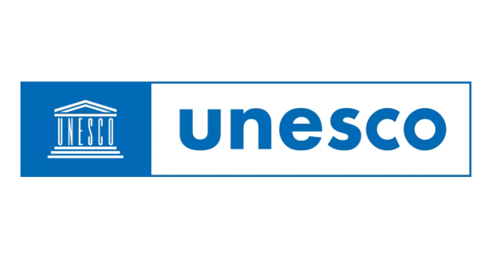
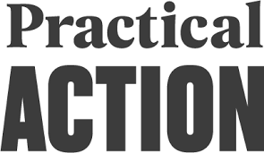
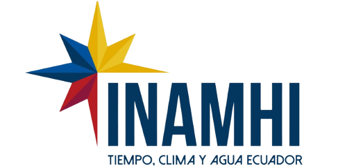

Partners & Collaborators
We work with universities, NGOs, government agencies, and communities worldwide to advance open environmental monitoring.

IIT Roorkee

UNESCO

Practical Action

INAMHI Ecuador
Research Institutions
- IIT Roorkee (India) - Hydrological monitoring and WMO Innovation Project
- UNESCO - Global water resources management initiatives
- Imperial College London - Sensor development and research foundation
NGO Partners
- Practical Action - Flood early warning systems in Peru, Nepal, and Bolivia
- Thames 21 - Long-term partnership for Thames catchment monitoring
International Collaborators
- INAMHI (Ecuador) - National meteorological and hydrological institute
- Peru Team - Mountain hydrology and flood monitoring
Community Networks
- ICE Hydro Community (ichydro.github.io) - Open hydrology network